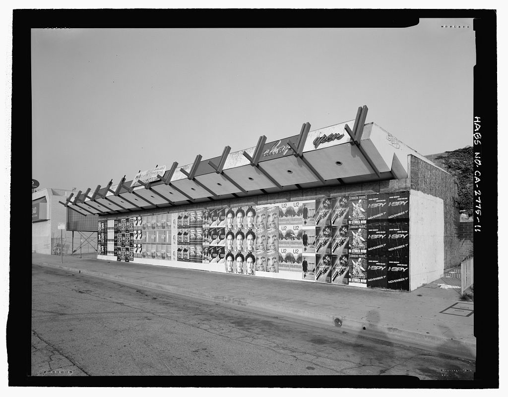
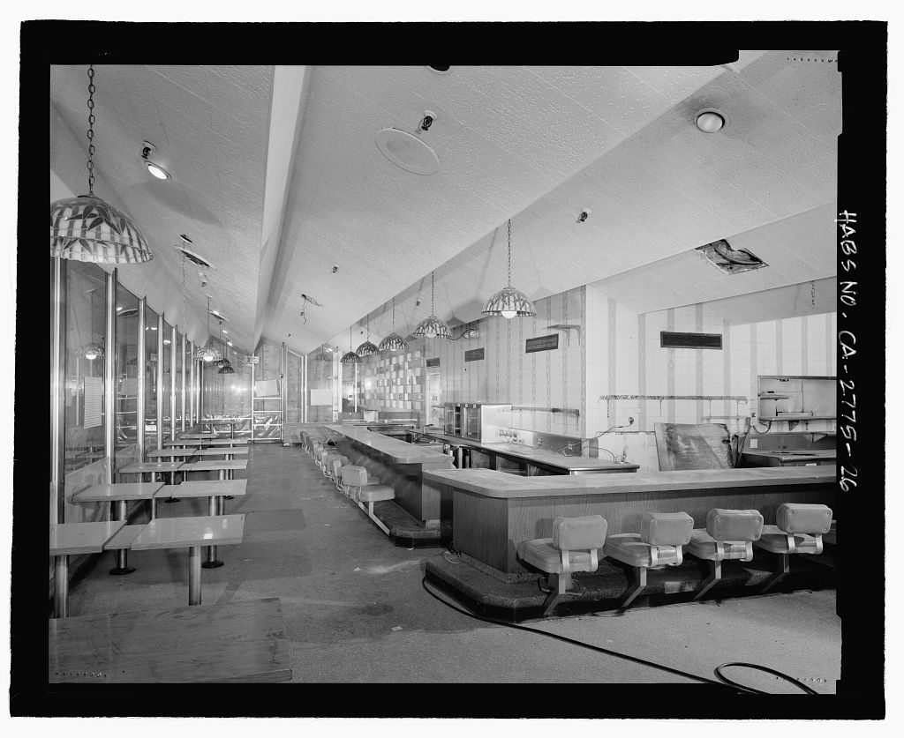

References / Architecture / 471
Holiday Bowl coffee shop, Los Angeles
The coffee shop of a 1958 Crenshaw Boulevard bowling alley, by Armet & Davis: a zigzag folded-plate roof whose beams shoot up past the eaves like tail fins.
- Source
- Library of Congress: HABS CA-2775, Holiday Bowl, 3730 Crenshaw Boulevard, Los Angeles
- Creator
- Armet & Davis (Louis Armet and Eldon Davis)
- Made
- 1957–1958 (HABS building dates); demolished after 2003
- Style
- Googie (agent-proposed, not yet reviewed by a person)
- Moods
- Exuberant, roadside, angular
- Evidence
- Downloaded and inspected HABS photographs 1, 11, 12, 26, and 28 of survey HABS CA-2775 (2002, black and white, 1024 px versions). Photographs 11 and 26 are stored. The photographs show the building in 2002, shortly before demolition, not as new.
- Reviewed
- Rights
- Open license, stored. License: public domain. Rights policy
Context
HABS significance statement: the Holiday Bowl was built in 1958, run by Japanese American businessmen, open 24 hours for shift workers, and “the ‘attached’ coffee shop stands out as a good architectural representative of the Googie style.” The coffee shop became a City of Los Angeles Historic-Cultural Monument on 19 December 2000. HABS gives construction dates of 1957–1958 and demolition after 2003. Library of Congress, HABS CA-2775.
Wikipedia names the Holiday Bowl among the Googie work of Armet & Davis and of designer Helen Liu Fong. Wikipedia: Googie architecture.
The HABS survey also holds copies of the 1957 construction drawings and a 1956 perspective sketch of the coffee shop (photographs 29–36). They were not stored, because HABS warns that images copied from other sources may be restricted.
Observed
- The roof of the coffee shop is a row of folded plates: each bay rises to a ridge and drops to a valley, so the eave line is a continuous zigzag.
- Above each ridge a pair of thin beams crosses and runs past the roof edge, ending in upswept points against the sky.
- The undersides of the folded plates are smooth and carry round recessed lights.
- Script lettering (“...lday” and “open”) is fixed to the fascia above the roof. In photograph 1 a tall pylon carries a “BOWL” panel in irregular capitals and a “COFFEE SHOP” panel.
- Inside, the folded plates read as tall pitched bays over a long counter with low stools; pendant lamps hang on chains and a glass wall runs along one side.
- The photographs are black and white, so they show no color.
Why it belongs
The zigzag roof and the beams that pierce it are the Googie habit of making the structure itself the sign: from a car the roofline reads as an energetic pattern, not as a shelter.
Wikipedia quotes a 1999 description of orange-and-green decor; the HABS photographs cannot confirm this.
Borrow
Use a repeating zigzag or sawtooth edge on a header or card top to give a panel lift.
Let thin lines cross a panel and run past its edge, ending in points, like the outrigger beams.
Measured
Machine-extracted by tools/image-traits.py on . Full measurement.
- Mean chroma
- 0
- Palette
- #b8b8b8 19%
- #070707 14%
- #a9a9a9 9%
- #777777 9%
- #f9f9f9 8%
- #6c6c6c 7%
- #828282 6%
- #d0d0d0 6%




